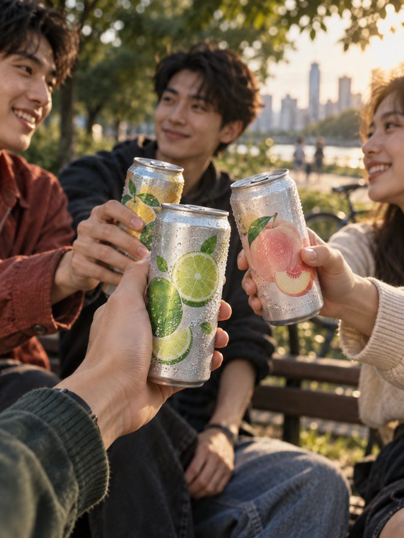
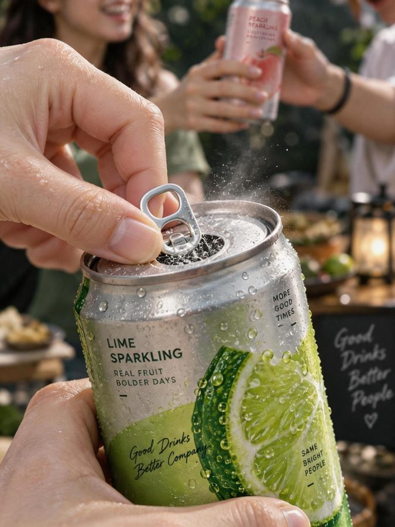
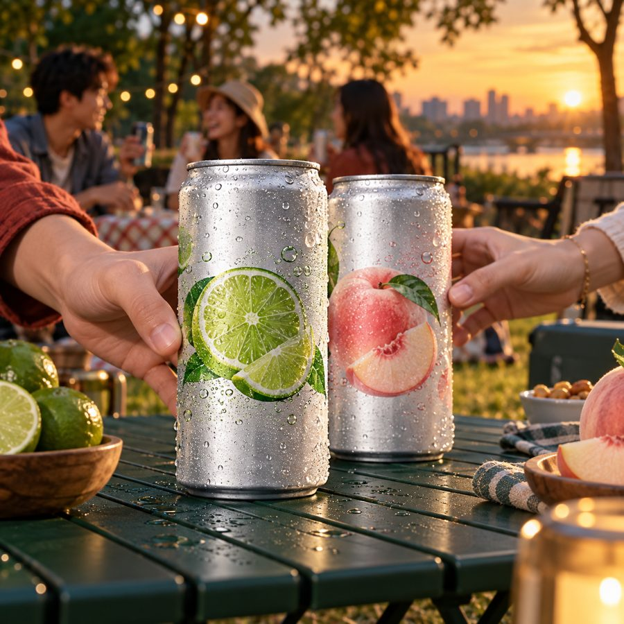
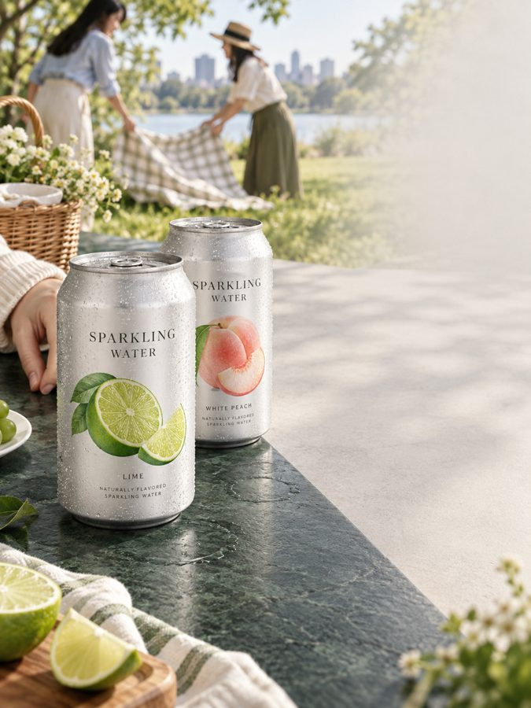
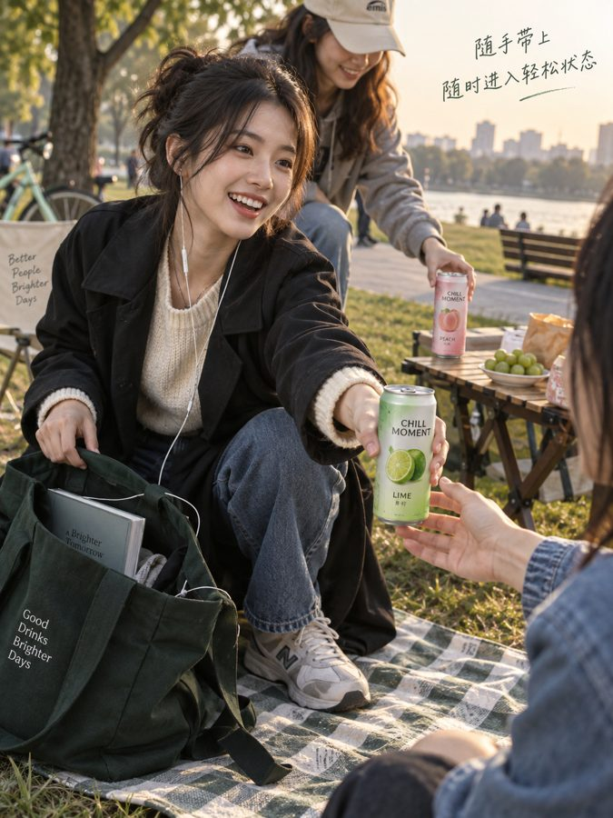

我做的广告营销 Agent：一次投放拆成 8 个阶段、21 个技能分工，在 3 个关键节点停下来等人拍板。这是完整一轮的回放，黄色节点可以由你来拍板。
2 支视频分镜，每个平台一套独立构图和提示词。点图看大图，点文件夹看里面写了什么。





18 个技能分在 8 个阶段里干活，3 个贯穿全程负责调度、审核和成本。哪一段出问题，就只重做那一段；换生图模型，只换 ad-production。
写一句广告语，看 ad-compliance-scan 怎么分级处理：低风险自动改，中风险等人确认，高风险直接拦。
扫描结果会出现在这里。
首轮花了四分之一预算，ROAS 1.51×，没到 2.0×。它没说「效果不错，建议加投」，而是指出问题在哪、下一轮改什么。
| 渠道 | 花费 | 订单 | ROAS | |
|---|---|---|---|---|
| 抖音 | ¥6,480 | 126 | 1.65× | |
| 小红书 | ¥3,720 | 57 | 1.38× | |
| 视频号 | ¥2,280 | 33 | 1.30× |
ROAS 达成率连续 48 小时低于 70%，自动减该渠道预算 15%；72 小时低于 60%，暂停。
保留「下班后」这个情境，再加 2 个不同人物的版本。
先修罐身文字和落地页首屏；小红书标题从「低负担」改成「下班后先轻一口」，去掉功效暗示。
某个版本连续 3 天点击率低于 2.1%，就暂停它、退回策略池。
ROAS 到 2.0× 且订单样本稳定，再按每次 20% 加预算；B、C 保留 15% 探索流量。
两件事分开说。
本页素材由 AI 生成；投放数据是按固定漏斗做的 72 小时仿真回放，不是真实广告平台数据。
上一段的结果是下一段的输入。出问题只重做那一段，不用整轮重来。
故事板、AI 标识、放不放量，这三处 Agent 只给依据，不替人决定。
ROAS 1.51× 不包装成「效果不错」。复盘的价值是告诉你下一轮改什么。